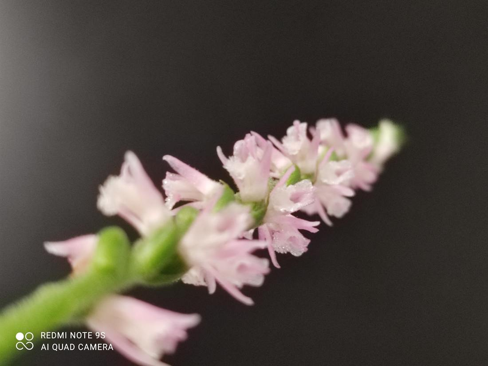

ネジバナ
Spiranthes australis (R.Br.) Lindl.
別名 · モジズリ（綟摺）
ラン科 · Orchidaceae
学名の由来
- Spiranthes（スピランテス）＝ギリシャ語の「speira（らせん・コイル）」＋「anthos（花）」で、「らせんの花」。花が縦にらせん状に並んでつくことにちなむ。和名「ネジバナ（捩花）」も同じ由来。
- australis（アウストラリス）＝ラテン語で「南の・南方の」。
- 日本のネジバナは長く Spiranthes sinensis var. amoena として扱われてきたが、近年 S. australis とされたり、2023年に別種 S. hachijoensis（ハチジョウネジバナ）が新種記載されるなど、分類の整理が進んでいる。写真だけでは種まで断定できないので、ここでは広く「ネジバナ」として扱う。
この植物のこと
- ラン科ネジバナ属の小さな地生ラン。芝生や日当たりのよい草地・土手などにふつうに生える、身近な野生ラン。大学の芝生にたくさん咲くのもこれ。
- 花序が縦にらせん状にねじれて、小さなピンクの花が並ぶ。ねじれる向きは個体でまちまちで、右巻き・左巻き・ほとんどねじれない株もある。
- 小さいけれど、ちゃんとランの形。唇弁（リップ）は白く、ふちが細かく縮れてフリルのようになっている（写真の白いレースみたいな部分）。
- ランなので菌根菌（ラン菌）と共生して育つ。抜いて植え替えても育てにくいので、芝生に咲いているのをそっと見るのがいちばん。
- 花期は初夏〜夏（およそ6〜9月）。別名モジズリは、乱れた「しのぶ摺り」の模様に見立てた古い呼び名で、百人一首の歌にもよまれている。
- 白い花の個体はシロバナネジバナと呼ばれ、ピンクの群れのなかから探し出すのが好まれる、ちょっとめずらしい株。